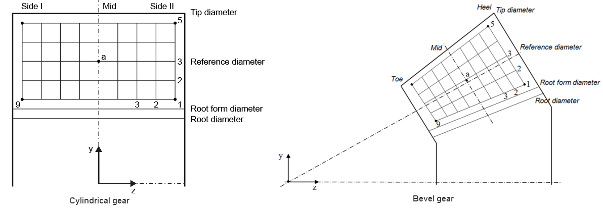

|
|
|


测量栅格
圆柱齿轮和锥齿轮均可生成测量栅格报告（选择 ）。
| 设置 | 描述 |
| 齿轮 | 设置齿轮以计算测量栅格。 |
| 测量栅格区域 | 设置测量网格用于计算。 0: 齿面 1: 齿根过渡曲面 |
| 测量机器 | 为特定测量机器设置报告格式 0: 克林根伯格 1: 格里森 |
| 列数 | 在齿宽上设置列数（>=3） 列数（区段数 – 2），用于 Parasolid 设置，因为区段不应包含轮齿的两端。 |
| 行数 | 设置齿廓上的行数（>=3） |
| 距齿根过渡圆的距离 | 距齿根过渡圆的距离。默认值 0.1*法向模数（中间）。 |
| 齿顶距离 | 齿顶距离。默认值 0.1*法向模数（中间）。 |
| 距侧面 I/小端（趾）的距离 | 圆柱齿轮侧 I 的距离，锥齿轮趾的距离。 默认值为（齿宽）/(列数 + 1). |
| 距侧面 II/大端（heel）的距离 | 圆柱齿轮侧 II 的距离，锥齿轮大端（heel）的距离 默认值为（齿宽）/(列数 + 1). |
报告包含网格点的坐标和法向量，格式为[XP YP ZP XN YN ZN]。参考点和齿厚角在报告标题中显示。
数据的参考坐标可能根据所使用的测量机类型而不同。例如，以下惯例适用于 Klingelnberg 测量机。

图15.98：Klingelnberg机器的圆柱齿轮和锥齿轮测量栅格
点和区段的序号序列根据 ISO/TR 10064-6 定义，即线的索引从下到上，列的索引从侧 II（轮齿大端）到侧 I（轮齿小端）。
Measurement grid
A measurement grid report is available for cylindrical and bevel gears (select ).
| Setting | Description |
| Gear | Setting the gear for calculating the measurement grid. |
| Measurement grid area | Setting the measurement array for the calculation. 0: Tooth flank 1: Fillet surface |
| Measurement machine | Setting the report format for a particular measurement machine 0: Klingelnberg 1: Gleason |
| Number of columns | Setting the number of columns across the facewidth (>=3) Number of columns (number of sections – 2) for parasolid settings, because the sections should not include both ends of a tooth. |
| Number of rows | Setting the number of rows across the tooth profile (>=3) |
| Distance from root form circle | Distance from root form circle. Default value 0.1* normal module (middle). |
| Distance from tooth tip | Distance from tooth tip. Default value 0.1* normal module (middle). |
| Distance from side I/toe | Distance from side I for cylindrical gears, distance from toe for bevel gears. Default value is (facewidth)/(number of columns + 1). |
| Distance from side II/heel | Distance from side II for cylindrical gears, distance from heel for bevel gears. Default value is (facewidth)/(number of columns + 1). |
The report includes the coordinates and the normal vector of the grid points in the format [XP YP ZP XN YN ZN]. The reference point and the tooth thickness angle are displayed in the report header.
The reference coordinates of the data may differ according to which type of measuring machine is used. For example, the following convention applies to Klingelnberg machines.
Figure 15.98: Measurement grid for cylindrical gears and bevel gears for Klingelnberg machines
The sequence of index numbers for points and sections is defined according to ISO/TR 10064-6, i.e. the index for lines runs from bottom to top, and the index for columns runs from side II (heel) to side I (toe).